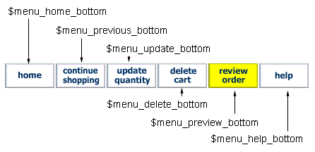

This file will help you deal with the Front End configuration file that governs Merchant OrderForm's behavior for the Cart and Order Summary sections. How much or how little you want it to do can be configured by these settings. If you are completely unfamiliar with working in Perl script configuration files, then you should probably read the section All About Perl Configuration Files before you even get started.
The other documentation files are:
Thanks for your interest in Merchant Order Form v1.53.
Both configuration files in the package you received are not set like the ones on the demo sites. The demo sites have the full blown set of features enabled. We have tried to enable only the minimum settings necessary for the install, in hopes of minimizing complications during your installation. Once you are up and running and have planned your Online Store Front, then you will have a better idea of how you want Merchant OrderForm to behave.
For your reference, we've included both of Mof's configuration files as they are running on the demo sites, so you may see what settings give it that behavior. We doubt that anyone would ever run every single feature of Merchant OrderForm as we have done on the demo sites. The files are called: demo1.txt and demo2.txt in the docs folder of your package.
And relax, you have already set most of the settings you need when you did the installation. While Merchant OrderForm's configuration files are huge for Perl scripts, the typical web developer won't need many of the settings. The bulk of the configuration file settings are there to allow programmers to customize Merchant OrderForm. Almost everything from the ground up can be customized in either the configurations or in hidden customizing areas of the script libraries.
Tip:
We have tried to place the configuration details in question format.
So, find what you want to do with the configurations and we'll explain that section and how to do it.
Shareware statement
You are authorized to install, test, and explore your copy of Merchant OrderForm. When you are satisfied that it will do the job for you, then you are expected to make arrangements for the Shareware fees.
Payment arrangements @ http://www.merchantorderform.com/payment.html
-- Or you can Send Check or Money Order To:
RUSSELL ALEXANDER
1904 INVERNESS BLVD.
AUSTIN, TEXAS 78745
-- Or you can use Pay Pal
| Table of Contents for this Documentation | Merchant OrderForm v 1.53 |
Front End Settings (Cart and Preview Invoice) - mof15.conf
Find the questions to what you want to doVarious file locations, security settings
- How to allow only your domain to use the scripts
- How to allow only post input
- Program file settings and file locations
- Where are the template file(s) settings
Some Miscellaneous Settings
- How to change the currency symbol
- How to change the weight symbol
- How to change the delimiter used
- How to set the default email address for error messages
Changing the cart's behavior
- How to keep or not keep the cart if a purchase is not completed
- How to keep or not keep a visitor's shipping information
- How to set up User Selected Input Options for your product(s)
- How to make User Select Input Options Price Adjusting Fields
- How to Change colors, fonts, and backgrounds in the cart tables
- How to format and color the description and product option area
- How to change the Navigation menus appearing throughout the pages
Behavior for the Shipping Information Page
- How to Change what the Shipping Info page asks for
- How to get rid of the Shipping Info page altogether
- How to Change what Shipping Address fields display
- How to Change what Shipping Address fields are required or not
- How to Change what the Shipping Address box looks like
- How to Change the validation cues on the Shipping Info Page
- How to Change the drop box list for Country - State in Shipping Address
Various computations
- How to configure a default discount
- How to configure and use the Coupon discount feature
- What can I do with the coupon discount feature
- How to configure a handling charge
- How to set up the insurance options and computations
- How to set the default Shipping computations
- How to set up user selected Shipping Methods and computations
- How to set up tax computations
| How to allow only your domain to use the scripts | ^ TABLE OF CONTENTS |
This is set in the Mof Front End configuration file:
mof15.conf
SECURITY SETTINGS
SECURITY SETTINGS
This setting prevents anyone from outside your domain, your Store Front, your pages from accessing the scripts and processing bogus orders. Some folks want this, some don't care. If this feature is not enabled and set, then it is possible for any form anywhere on the web to submit products to carts running under your installation of Mof. This is not a big deal with some merchants, because no damage can occur, just a bogus invoice is produced. The Merchant can usually spot this.
If you want to prevent this, then just enable the Allow Domains feature. When the setting is empty then no domain checking occurs. Enable the feature by putting a list of allowable domains that can post to your script.
WHAT DOMAINS ARE ALLOWED TO ACCEPT POST INPUT ?
Here's an example of enabling this feature
@ALLOWED_DOMAINS = (
'http://www.yourdomain.com',
'http://208.124.45.111'
);
You must leave it completely empty to disable the feature
@ALLOWED_DOMAINS = ();
Note: If you enable this feature in the Front End you should also enable it in the Back End. If you don't enable it in the Back End, then someone could simply process all data up to that point from an unknown location, and submit to the Back End process. Again, this will only create a bogus invoice, and can't cause any damage to your site or server.
Adjust your <mofpayment.conf> navigation menu:
If you are using the Allowed Domains feature, then you may need to make a final adjustment with the menu functions for the back end payment processing. Under some SSL installations, the cgi Reffering_url is not present in the environment when mof.cgi is called from a process in mofpayment.cgi. It is not present at the server level of the cgi process, and therefore you will get a Domain Not Allowed message if attempting to use the "Edit Cart" function from the Billing Information page. Test this on your installation if you are using the Allowed Domains feature. If this is your case, then you should disable both the top and bottom "Edit Cart" links so they are not available on the Billing Information page.
Disable the "Edit Cart" buttons only in
mofpayment.conf
# NAVIGATION MENUS IN DYNAMIC PAGES
# NAVIGATION MENUS IN DYNAMIC PAGES
Disable both of these buttons so they do not allow a post back to the cart while on the Billing Information page
$menu_viewcart_top
$menu_editcart_bottom
| How to allow only post input | ^ TABLE OF CONTENTS |
This is set in the Mof Front End configuration file:
mof15.conf
SECURITY SETTINGS
SECURITY SETTINGS
This feature disables Mof from using any GET submissions, except the ViewCart function. If you enable this feature then you are telling Mof to only accept POST submissions for any cart input. This prevents someone from modifying the pricing of a product from the URL Query line in their browser. Again, this cannot cause any damage to your site, but someone could simply change the price of a product by editing the URL Query information submitted by the GET environment, thereby creating a bogus invoice.
Since the ViewCart function for Mof is submitted via a GET submission, Mof allows only the ViewCart function through. The ViewCart function can only return cart data that is stored on the server. The ViewCart process cannot be edited or manipulated.
DO YOU WANT TO DISALLOW ANY GET SUBMITS ?
$POST_ONLY = 0;
Note: When both the Allow Domains feature and the Post Only settings are enabled, then a user would be unable to use your installation of Mof to submit bogus products, or create bogus invoices.
Note: If you enable this feature, then make sure that you don't have any product input in your Online Store Front that uses the GET environment for submitting product data.
| Program file settings and file locations | ^ TABLE OF CONTENTS |
This is set in the Mof Front End configuration file:
mof15.conf
FILE SETTINGS - FILE LOCATIONS
FILE SETTINGS - FILE LOCATIONS
This is a group of settings that define where the main program files are, and where and how Mof works with the set of scratch files that it uses to store cart data and shipping information data.
WHAT IS THE NAME OF THE MAIN PROCESSING FILE ?
This identifies the Front End program file. This will always be mof.cgi unless you rename mof.cgi to another name. Then you will need to define that exact filename so Mof can work with itself. An example would be if you have to rename program files to *.pl files to be installed under an NT server. Then you will have to define the correct filename in this setting.
This setting is never an absolute path. It is either just the simple filename or the full URL as this script is accessed via the Web. You should never need a URL pathway here, since the script only references itself in its native location.
WHAT IS THE NAME OF THE FINAL PAYMENT PROCESSING FILE ?
This references what the Back End Checkout processing file is called, and where it is located. If both the Front End mof.cgi and the Back End mofpayment.cgi are installed under the exact same protocol and location, either HTTP or HTTPS, then you can simply reference the filename, since it can reference itself in its native directory.
If you are installing the Back End under SSL and the Front End is not, then you will need to reference the Full and complete HTTPS. Or, if the Back End mofpayment.cgi will be installed on a separate server than the Front End, then you will need to reference the Full URL to the file.
WHERE ARE THE DATA STORAGE FILES LOCATED ?
This setting identifies the directory where the cart data files are located.
These locations should have already been set when you went through the installation. If you need to change the location of this directory then you can do it here. We recommend that you keep these directories behind your public web access areas. Mof uses this directory to store cart files. Mof doesn't store any sensitive information like credit card numbers at all, so the data in these files is harmless, and they can be placed anywhere you want.
If you are defining this for NT you'll need to end the folder name with \\ , one \ for the folder ending, and one \ as the Perl escape character. For Unix-Linux you must end the directory name with the forward slash / .
These are Full Absolute Pathways only, not an HTTP address. Consult the section in Installation about Absolute Paths if you are unclear how to define these.
WHAT FILE EXTENSION IS USED FOR DATA STORAGE FILES ?
This setting allows you to define any extension you want for your cart data files, in case you want to use a different extension that the one we have defined.
WHERE ARE THE SHIPPING INFORMATION FILES LOCATED ?
This setting identifies the directory where the
These locations should have already been set when you went through the installation. If you need to change the location of this directory then you can do it here. We recommend that you keep these directories behind your public web access areas. Mof uses this directory to store cart files. Mof doesn't store any sensitive information like credit card numbers at all, so the data in these files is harmless, and they can be placed anywhere you want.
If you are defining this for NT you'll need to end the folder name with \\ , one \ for the folder ending, and one \ as the Perl escape character. For Unix-Linux you must end the directory name with the forward slash / .
These are Full Absolute Pathways only, not an HTTP address. Consult the section in Installation about Absolute Paths if you are unclear how to define these.
WHAT FILE EXTENSION IS USED FOR SHIPPING INFO STORAGE FILES ?
This setting allows you to define any extension you want for your shipping information data files, in case you want to use a different extension that the one we have defined.
| Where are the template file(s) settings | ^ TABLE OF CONTENTS |
This is set in the Mof Front End configuration file:
mof15.conf
OUTPUT TEMPLATES TO USE
OUTPUT TEMPLATES TO USE
This is a group of settings that define where the Template files are located for the Front End process. You can customize what the Mof output pages look like to match your web site, call them anything you want, and locate them anywhere. You can see more information about Making Templates for your site in the Installation section, under Making Your Own Templates. There's a table there explaining the seven example templates that come in the distribution package, and what they do.
Note: These locations are Absolute pathways only, and never an HTTP URL address. The absolute path should lead all the way down to the actual filename and extension. You should have already set these if you went through the Installation instructions.
WHERE IS THE MAIN PAGE TEMPLATE ?
WHERE IS THE VALIDATION MESSAGE PAGE TEMPLATE ?
Page with Shipping information, insurance, coupons
WHERE IS THE PREVIEW PAGE TEMPLATE ?
Order Summary page: shows all computations for invoice
WHERE IS THE PREVIEW INFORMATION TEMPLATE ?
WHAT IS THE INSERT MARKER NAMED ?
This setting identifies a marker in your template files that Mof is looking for. Mof inserts its output and results at this marker. So, in building your templates put this marker where the main body of output will be. This marker must be in the format of an html comment so that it doesn't show in your output. You can make it anything you want. Just make sure what you define here is exactly what you use as the html marker when making your templates.
| Miscellaneous Settings | ^ TABLE OF CONTENTS |
This is set in the Mof Front End configuration file:
mof15.conf
MISCELLANEOUS SETTINGS
MISCELLANEOUS SETTINGS
WHAT CURRENCY SYMBOL TO USE ?
WHAT WEIGHT SYMBOL TO USE ?
WHAT DELIMITER TO USE FOR PRODUCT INFORMATION ?
WHAT EMAIL ADDR TO USE FOR ERROR MESSAGES ?
|
How to keep or not keep the cart if a purchase is not completed How to keep or not keep a visitor's shipping information |
^ TABLE OF CONTENTS |
This is set in the Mof Front End configuration file:
mof15.conf
COOKIE SETTINGS
COOKIE SETTINGS
Mof keeps track of a customer's cart contents and their shipping address by making scratch files. Mof knows what scratch files belong to a customer by setting two cookies for that customer. These settings direct Mof how to handle the cookies.
HOW LONG IN HOURS TO HOLD THE CUSTOMER CART CONTENTS ?
This setting allows for how the cookie will be set for a customer's cart file. If you set it to zero then the cookie referencing a customer's cart file expires when their browser is closed. If you want to keep a reference to a customer's cart file so their cart will still be active when they return to your site, then you can set this to the number of hours to hold the cookie. Holding the cookie is equivalent to holding the cart. Holding the reference is equivalent to holding the cart.
Set this to 240 to hold cart contents 10 days
Set this to 8760 to hold cart contents 365 days
Note: There are two advantages to holding the cart: (1) if a customer doesn't finalize the order, their items are still in the cart the next time they visit the site. This could even be used with a simple SSI call to a script that checks the cookie and lets the customer know they still have un-purchased items in their cart. (2) when customer finalizes the order, with a held cookie, then they can't get redirected to the nocookies message page in the future, which looks a little more professional.
This setting is set to zero in the package distribution.
ALLOW CART DELETE RUNNING UNDER SHARED SSL (Different UID) Unix ONLY
This is a setting appearing directly below the holdtime_data setting for the cart. During your installation and testing leave this set to zero, unless you have enabled the delete_cart_final setting in mofpayment.conf and you are getting a Data Processing Error message, saying that Mof can't access the data files.
$set_ssl_chmod = 0;
Set this switch to one to turn on Mof's ability to work under different uid (user Id's), which will fix the problem. You will now be able to run Mof under some shared SSL set ups and use the more professional looking delete_cart_final feature.
HOW LONG IN HOURS TO HOLD THE PREVIEW INFORMATION ?
This setting acts the same way as the cart cookie explained above, except it is the reference for holding the Shipping Address information. Mof allows for this to be saved so that a customer doesn't have to keep entering it each time they want to Preview the Invoice. Set it to zero to expire the cookie when the browser session closes. You probably would never want to set this one to zero. You should probably set it at least to 100 days or so. The customer always has the option to change a Shipping Address, but at least they don't have to keep entering it each time they return to your site to buy something. Remember the setting is in hours.
Set this to 240 to hold preview information file 10 days
Set this to 8760 to hold preview information file 365 days
The package has this setting set to 2400 hours, which is 100 days.
WHAT PAGE TO SHOW IF BROWSER REJECTS COOKIES ?
This is the location of an information page that Mof will redirect to if it finds problems with a browser's cookies. The page will be triggered if a customer attempt to use the ViewCart function for the cart, but doesn't have a cart yet. It could also trigger if someone has cookies disabled in their browser and attempts to use any of the cart functions. Set it to the Full URL for whatever page you want Mof to redirect to. The example cookie redirect page that comes in the package is called: nocookies.html. You can customize that file anyway you want.
| How to set up User Selected Input Options for your product(s) | ^ TABLE OF CONTENTS |
This is set in the Mof Front End configuration file:
mof15.conf
SETTING UP USER INPUT OPTIONS
SETTING UP USER INPUT OPTIONS
You first need all your user input options built on your forms. You can set up an unlimited number of user input options with any product, and an unlimited number of user input FieldNames throughout your site. Some products may use the same user input option, for example: Colors for a Hat could be the same FieldName as colors for a shirt. The actual <select> list doesn't need to be the same between different uses of the same FieldName. Mof will collect whatever <select> value is sent under that name.
You can use checkboxes, radio buttons, list boxes, drop boxes, and text boxes as optional user input for any particular product. All of these input types act by submitting a name=value pair to Mof. You can combine any of the above input methods for any given product. The way Mof knows what to look for as optional user input for a product is through the following settings:
1. Declare all your input field names
First, identify all User Selected Input Option field names that you will be using throughout your Store Front. Gather all the name="whatever" input names that are used to select product attributes or options. Be careful to list the exact names you use as input on your web page forms. These names are case sensitive. See: ExampleSingleInput.html for examples on how you build selection options next to a product.
When you have a complete list of all the User Selected Options input names used on your forms, then you need to declare them in the associative array called %product_fields. This is a simple list of each input name you want Mof to look for in user input for any given product, and a brief description of that option. You must list all possible names that you used throughout the site that Mof may be expected to receive. Don't worry that you have lots of names in this list, Mof will combine only those user selected options that are actually submitted with the product.
Find this associative array
%product_fields
under the following section:
WHAT ARE FIELDNAMES THAT MOF SHOULD LOOK FOR IN USER INPUT ?
Set it up to identify all your FieldNames and Descriptions:
%product_fields=(
Here's how you would identify the input options that are used in the
ExampleSingleInput.html.
'HatSize','Selected Hat Size',
'PropellerColor','What Color is your Propeller',
'BandType','What Kind of Band'
);
Note: If you have constructed pages using the QUANTITYBOXES mode, then all your user option input has names that are numbered. Use only the Root Name in this setting. Mof knows how to look for the numbering scheme, but you will confuse it if you include the numbering. The ExampleOrderForm.html -- second example uses the exact user option input names above, but has the numbering system in place. Notice that when we declare these fields in %product_fields then we do not need to identify the number. Also, do not list quantity as one of your fields. Mof reserves the fieldnames "quantity" and "order" for special use.
2. Identify any input field names that are required
Now, you need to identify any of the fields declared above in your list that will be "required," meaning that if a product is ordered but its options are not selected, then a validation message is triggered. Just simply list the exact FieldNames above (not the descriptions) that you want validated. If Mof doesn't see the FieldName in this list, it won't be required input. If you don't want any user input validation then @field_validation=();
Find this array
@field_validation
under the following section:
WHAT ARE FIELDNAMES IN USER INPUT THAT ARE REQUIRED ?
Here's what it would look like if all FieldNames declared in step 1 as user input were required input.
@field_validation=(
'HatColor',
'HatSize',
'PropellerColor',
'BandType'
);
Note: For validation to work you must have set up your user input drop box options with the initial (or selected) value to Null. To make a Null value simply make value="". Do not leave this out or input validation will not work properly.
3. How to format-color the description and product option input
This area has additional setting in the Mof Front End configuration file:
mof15.conf
SETTING UP USER INPUT OPTIONS
SETTING UP USER INPUT OPTIONS
WHAT FONT TO USE IN DISPLAYING MISSING FIELD USER INPUT ?
If MOF finds incomplete user input as configured above, then you can tell the validation message page what font to outline field names and descriptions. Make sure and use both (s)tarting and (e)nding font attributes, otherwise Required field names will inherit the format of your validation template.
HOW DO YOU WANT USER INPUT TO BE FORMATTED IN "DESCRIPTION" SECTION ?
All user input is listed in the "Description" section of the invoices. You can specify if you want user input criteria to appear in a string of text or if you want user input criteria to be listed in a list. Make list formatting (1), or make one line (0). The image example below has this feature enabled. If it were disabled than the text below would be formatted in one long line.
WHAT FONT ATTRIBUTES TO USE IN DISPLAYING COMBINED DESCRIPTION ?
These six settings allow you to set the html formatting for displaying the product options input in the description section. Leave them blank for nothing. Make sure you start and stop them correctly, especially if you are coloring or bolding the string(s)
Having problems with this section ?
If you are having problems with input, validation, etc working correctly, then check, re-check, triple-check that field names match in all three places below-- An exact match is required, case sensitive.
| How to make User Select Input Options Price Adjusting Fields | ^ TABLE OF CONTENTS |
This is set in the Mof Front End configuration file:
mof15.conf
SETTING UP USER INPUT OPTIONS
SETTING UP USER INPUT OPTIONS
This setting is used to identify any special Price Adjusting Fields placed throughout your Online Store Front. If you make forms that will require the base price of a given product to be adjusted according to any Product Options selected for that product, then you must declare what those Field Names are in this setting.
Mof will treat any product option input under the declared Field Name(s) in this setting in a special way. Instead of simply appending the product option input to the product description, Mof will use the data in these special fields to adjust the base price of the product, and reset the product price before it enters the cart.
All you have to do in this setting is declare what fields you want Mof to treat as special Price Adjusting Fields.
WHAT ARE FIELDNAMES IN USER INPUT THAT ARE PRICE ADJUSTING ?
Here's the example from our demo site
@field_adjustments = (
'DrumSkin',
'DrumRim',
'DrumPrint',
'HatSize',
'HatColor',
'PropellerColor'
);
Note: You must still declare all User Input Options for products in the main list referred to in the section How to set up User Selected Input Options for your product(s). And you must also still use the Validation Required settings for any User Input Options for products if you want a particular field validated. The Main User Input Product Options list and the Validation List work separately from the Price Adjusting list. Here's an overview:
Note: if you declare a product option Field name as Price Adjusting and the input submitted is not contain price adjustment data, then it is okay, Mof will ignore it and treat it as regular input. But, it you submit some product option input formatted for Price adjustment, and have not declared its Field Name in the @field_adjustments list, then data for that product will be distorted in the cart.
| How to Change colors, fonts, and backgrounds in the cart tables | ^ TABLE OF CONTENTS |
This is set in the Mof Front End configuration file:
mof15.conf
BACKGROUND COLORS - FONT STYLES IN ORDERS TABLES
BACKGROUND COLORS - FONT STYLES IN ORDERS TABLES
This section of settings allows you to format the tables that display products throughout the View Cart and Preview Invoice pages. You can match the color scheme on your site, change fonts, background, even use images as backgrounds. There should be an image below of the settings legend, if it doesn't show up, then look for it in the package: called: TableCapture.gif
WHAT FORMATTING TO SHOW IN THE INVOICE TABLE ?
$tableborder_color
contains both the border=1 and color attribute
This allows you to set overall border attributes like those MSIE dark-light bordercolors.
$action_message_bg
$action_message_bg_preview
These two are background settings. You can use an image or just specify a color
Our example uses image files to make the tab appearance.
$returntofont
This returns everything to the font you started with in your templates
| How to change the Navigation menus appearing throughout the pages | ^ TABLE OF CONTENTS |
This is set in the Mof Front End configuration file:
mof15.conf
NAVIGATION MENUS IN DYNAMIC PAGES
NAVIGATION MENUS IN DYNAMIC PAGES
This area has settings for all Navigation menus and links on the Front End cart process. You can set any of the functions to show text, submit buttons, or images. Our example installation uses images. You can set each of these function with any type of HTML attribute you want.
You can set them to display text, images, or buttons. Examples:
Mof manages what function buttons and/or links are displayed for a particular page in the cart process. For example, the "Update Quantities" function is only displayed on the View Cart page; the "Edit Cart" function is only displayed on the Order Summary page, and the Shipping Information page; the "Edit Preview" functions and arrows are only displayed from the Order Summary page, and only if preview information is required or stored. You cannot change the order that function are displayed in, or which process they are allowed to be displayed in. This is strictly managed by Mof. You shouldn't attempt to re-arrange the order of the functions in the code either, since this order is very complex, and must manage all kinds of different form input.
If you want to eliminate any of the buttons for functions, then you can make that setting Null. Mof will not attempt to display a button or function that has a Null value. While this gives you the ability to eliminate functions, be careful. You could remove functions that cause a customer to get stuck at some point in the cart process, without a function to proceed, return, update, delete, edit, etc..
WHAT TO DISPLAY IN TOP NAVIGATION SCHEME ?
Our distribution has these set to text links.
$menu_previous_top
$menu_viewcart_top
$menu_help_top
$menu_help_top_url
HOW TO DISPLAY EDIT BUTTONS/IMAGES FOR PREVIEW INFORMATION
These are the Edit Arrows that provide a link back to edit the Shipping information. These Edit functions are only available on the Order Summary page, and display only if Preview info is available
$menu_edit_preview_top
$menu_edit_preview_summary
WHAT TO DO WITH BOTTOM NAVIGATION SCHEME ?
These are the settings for the bottom navigation scheme that appear on the View Cart page. Notice our settings point to an image, they could just as well be set to display text, or a submit button.

These are the settings for the bottom navigation scheme that appear on the Order Summary page. Notice our settings point to an image, they could just as well be set to display text, or a submit button.
| How to Change what the Shipping Info page asks for | ^ TABLE OF CONTENTS |
This is a very large section in the Mof Front End configuration file:
mof15.conf
SETTING UP PREVIEW INFORMATION OPTIONS
SETTING UP PREVIEW INFORMATION OPTIONS
Mof uses an intermediate page between the View Cart and Order Summary (preview invoice) page, that we will call the Shipping Information page, because that's what we called it in the example template. Mof uses this intermediate process to collect any customer information that would be relevant to creating an accurate Preview of the Invoice: Computations like shipping, tax, insurance, and coupon discounts. The default discount and handling computations do not require any customer information other than your configuration settings.
This section will explain how Mof attempts to understand what you want this intermediate process to do based on multiple settings for this area of the configuration file. Mof will interpret these settings to determine what you want:
The table below lists all the settings that are capable of directing Mof to trigger the intermediate information page. If you have any of these settings enabled, Mof will decide that you need customer information, and therefore, enable the Shipping Information page to trigger. These settings are spread out and span the whole section in the Setting up preview options area, and enabling or disabling combinations of these settings will effect whether Mof triggers the Shipping Information page or not. When all of the settings in this list are Null, then Mof will not ask for any customer information, and when the customer clicks the "Review Order" button, they will be taken directly to the "Order Summary" page (the Preview Invoice page).
If Mof sees that you want to do any of the functions in the settings in this table, then it will enable the Shipping Information page. Each of these settings has its own section in this documentation explaining how to work with it. Click on the setting in the table to go to that section in the documentation. We've also included examples on different scenarios below the table.
|
Enabling any of these 9 settings will trigger the intermediate information page | ||
|---|---|---|
|
Anything to do with Shipping Information | ||
| setting | how it works to trigger info page | |
|
1 | %shipping_destination_fields | These four settings enable shipping computations in one way or another. If you enable any of these four settings, Mof will think you want shipping or shipping insurance information. The 4 settings work very closely together, and you should be clear when disabling or enabling combinations of these 4 shipping settings: Examples below. |
| 2 | @use_shipping | |
| 3 | %use_method | |
| 4 | %use_insurance | |
|
Using the coupon discount feature | ||
| setting | how it works to trigger info page | |
|
5 | @use_coupons | If you enable this setting Mof will think you want to use the Coupon discount feature, which requires the customer to enter a valid coupon number on the intermediate information page. |
|
Anything to do with area specific tax computations | ||
| setting | how it works to trigger info page | |
| 6 | %use_city_tax |
If you enable any of these area specific tax computations, then Mof will need input on what the tax area is. These computations use input collected in the shipping information Field(s)
If you are using shipping information, then you will already have the appropriate Field(s) enabled, because you will likely want the City, State-Prov, Postal Code, and Country. Examples below. |
| 7 | %use_zipcode_tax | |
| 8 | %use_state_tax | |
| 9 | %use_country_tax | |
Important: The thing to understand about these features is that it's possible to make a mistake in the combinations of settings, and how the different settings interact, then not get what you are wanting. Mof will give you what you want when you get the interactions of all the 9 settings correct. Here's some examples on the different areas outlines in the table above:
Examples of how shipping settings interact
If you enable either of the two shipping computations: the default shipping method
(2)
, or the customer selected shipping method
(3)
, then Mof will expect the appropriate shipping Fields enabled in the
%shipping_destination_fields
(1)
array.
Enabling the customer selected shipping method (3) , always overrides any settings in the default shipping method (2)
If you want to collect only the shipping address but don't want to compute any shipping charges, then enable both these settings:
%shipping_destination_fields
@use_shipping = (1);
To have the Shipping Field(s) display you need at least one of the shipping methods enabled: the default (2) or customer selected (3) method. You can either have these methods set to compute real shipping charges, or the default method can be set to compute Null, as in the above example. This way you get shipping address info, but never any shipping charges.
The insurance option requires that Shipping fields (1) and at least one method (2) or (3) be enabled. Again you can set the methods to compute real shipping charges or set the default method (2) to compute Null. Shipping insurance won't trigger unless you're actually shipping something.
Example of using insurance, shipping fields, with real default shipping charges:
%shipping_destination_fields = ( define fields );
%use_insurance = ( define methods, rates
@use_shipping = ('weight',0.35,0.55,1);
Example of using insurance, shipping fields, but no shipping charges:
%shipping_destination_fields = ( define fields );
%use_insurance = ( define methods, rates );
@use_shipping = (1);
Reminder: We've included the configuration files that are running on our demo sites, which have all options enabled, in case you need real examples of how to build the array definitions in some of these settings.
Examples of how tax settings interact.
The basic rule is this: If you enable any of the area specific tax computations (6) (7) (8) (9), then M of will trigger the information page and ask for whatever Field(s) are listed in the %shipping_destination_fields (1) array. You should have the Field(s) that will be needed to do tax matching enabled in the Shipping Fields (1) array.
If you are collecting Shipping destination addresses, you should already have the needed Field(s) enabled. However, if you only want Tax information and not any Shipping destination address (you're not shipping products), then you'll have to enable the Field(s) needed to make any tax computations you set in (6) (7) (8) (9). If you configure Mof this way, then Mof will present messages that say "Tax Area" instead of "Shipping Information." Note: To force Mof to say "Tax Area" instead of "Shipping Info:" you can't have either of the shipping methods (2) (3) or insurance (4) enabled, else Mof thinks you are wanting to compute and use shipping data too.
Mof will use your settings in (6) (7) (8) (9) to do area specific tax matching to the customer input for City, State-Prov, PostalCode, or Country. You can enable any or all of these areas to match on.
Here's one example: Let's say you don't ship anything, but want to be able to compute a tax on any orders in the Tax Area for six Postal Codes. You must have two settings: configure the tax area to match zip codes (7) and present the zip code Field so it can be entered by the customer (1). This example asks for the Postal Code to be entered, and uses tax area settings to compute a 2.5% tax on any zip codes matching our list.
Settings (1) and (7) in the table above.
%shipping_destination_fields = ('Ecom_ShipTo_Postal_PostalCode',4);
%use_zipcode_tax = (
'78745',0.025,
'78746',0.025,
'78747',0.025,
'78748',0.025,
'78749',0.025,
'78750',0.025
);
The above example shows that you should have at least one Field enabled (1) to use tax matching, or you shouldn't be using any tax matching. You can't match on nothing. You can use the global tax setting, which doesn't require any matching, but then you don't need any of the area specific tax settings, since the global tax setting presides.
Other examples:
Yes, you can enable only the Coupon Discount feature. You can enable the Coupon Discount and one tax matching area. You can enable only the Shipping area and insurance, with no shipping charges. You can enable a global tax, and shipping restricted to only a local area. You can enable shipping areas instead of shipping methods, where the customer selects that shipping area they are in. You can set up any logical combination of the nine settings to collect information that may be pertinent to the "Order Summary."
Example: A computer distributor might charge shipping and tax. So only the Postal code is needed from the customer. Configure the Nine settings to ask for only the Postal Code on the Shipping Information page. The customer enters the zip code to get an exact "order Summary" with any applicable shipping or tax charges.
| How to get rid of the Shipping Info page altogether | ^ TABLE OF CONTENTS |
This is a very large section in the Mof Front End configuration file:
mof15.conf
SETTING UP PREVIEW INFORMATION OPTIONS
SETTING UP PREVIEW INFORMATION OPTIONS
Set all the nine settings referred to in the above section to Null. Of course, doing this prevents you from collecting any information for shipping address, shipping computations, shipping methods, insurance, discount coupons, or tax matching information. So, you won't be able to make any of those computations, but you will by pass the Shipping Information page completely. The "Order Summary" page will say "ORDER INFO" and not "SHIP TO" on the top left tab of the cart.
Note: For an explanation of how these nine settings interact see the section above.
%shipping_destination_fields = ();
@use_shipping
= ();
%use_method
= ();
%use_insurance
= ();
@use_coupons
= ();
%use_city_tax
= ();
%use_zipcode_tax
= ();
%use_state_tax
= ();
%use_country_tax
= ();
|
How to Change what Shipping Address fields display How to Change what Shipping Address fields are required or not |
^ TABLE OF CONTENTS |
This is a very large section in the Mof Front End configuration file:
mof15.conf
SETTING UP PREVIEW INFORMATION OPTIONS
SETTING UP PREVIEW INFORMATION OPTIONS
If you are unfamiliar with the exact syntax rules for associative arrays then you can consult the section Associative array settings
WHAT SHIPPING DESTINATION FIELDS TO USE - VALIDATE ?
This associative array defines what Shipping Fields you will be using, and whether to require a Field or not. Any Field Name in the Master List of Shipping Fields can be used or omitted. The distribution package is pre set with all Fields. You may want to omit some.
'Field Name', [required > 0, not required 0]
Here's an example:
%shipping_destination_fields = (
'Ecom_ShipTo_Postal_Name_First',2,
'Ecom_ShipTo_Postal_Name_Middle',0
);
This defines that two fields will display.
The First Name Field requires at least 2 characters entered, and the Middle Name Field is not required.
What is the master list of Shipping Info Field Names ?
You can have up to 14 Fields for Shipping Destination.
We are using the 14 [Ship To] Fields in the ECML specs v1.0: http://www.ecml.org/
We substituted "Company" for the ECML "Line3" because they did not have company and we have user feedback that business name is important to customers.
| How to Change what the Shipping Address box looks like | ^ TABLE OF CONTENTS |
This is set in the Mof Front End configuration file:
mof15.conf
SETTING UP PREVIEW INFORMATION OPTIONS
SETTING UP PREVIEW INFORMATION OPTIONS
HOW WILL SHIPPING PAGE SECTION HEADINGS AND PAGE TEXT LOOK ?
$preview_heading
$preview_text
HOW WILL THE SHIPPING ADDRESS BOX LOOK ?
$font_outside_line
$font_left_column
$font_right_column
$font_preview_titles
| How to Change the validation cues on the Shipping Info Page | ^ TABLE OF CONTENTS |
This is set in the Mof Front End configuration file:
mof15.conf
SETTING UP PREVIEW INFORMATION OPTIONS
SETTING UP PREVIEW INFORMATION OPTIONS
WHAT TO DISPLAY FOR VALIDATION CUES ?
You can use these settings to specify how validation cues appear on the Preview Information page. The examples in the package use:
You can use these settings to specify the URL of your own images, or you can put text messages and html attributes. You can disable any or all four of the above validation cues by putting the html <br> attribute as its setting. Important: You must at least put the html <br> attribute in each setting or your form table may not display correctly.
$preview_required
shows required fields when entering page for first time - Required
$preview_okay
$preview_missing
$preview_incomplete
$preview_message_bg
| How to Change the drop box list for Country - State in Shipping Address | ^ TABLE OF CONTENTS |
This is set in the Mof Front End configuration file:
mof15.conf
SETTING UP PREVIEW INFORMATION OPTIONS
SETTING UP PREVIEW INFORMATION OPTIONS
These two settings allow you to define files that contain drop box data to display for State-Province or Country in the Shipping Fields form. If you make the setting Null, then a standard text box will display instead of a drop box. Please note that eliminating the drop box will make things unreliable if trying to do any Shipping or Tax matching. The best thing to do is modify the list to suite your needs.
The package examples countries.txt and state.txt go into your cgi-bin and then we just define the file name for Mof to look for to use in creating the Select Box list(s). You can make these lists from any file, call them anything, locate them anywhere. If you locate them outside the native directory Mof is running in, then you'll need to define the exact absolute path for the file(s).
The country Lists
Our packaged lists for countries are using the 208 countries listed in the USPS tables for Air Shipping, June 2000. This list of countries has long names so they appear with the full country name in all printable areas. We have United-States set as the default country to be listed. You can remove the "selected" attribute for United-States if you do not want that. If you don't assign one of the other countries the "selected" attribute, then the first country on the list will be the default. We have also included the ISO 3166-1 country lists, which lists 238 countries by their 2 letter country code, if you want to use that list instead.
The State-Province Lists
Our packaged lists for states-provinces has all US states and Canadian Provinces listed by their 2 letter code. It also has the first value of Null, which is the default selection. This must be left as the first or "selected" option if you intend to require this field. The very next option is value=NOTINLIST>. Whenever Mof sees NOTINLIST as the submitted State-Province, then State-Province is not printed. This is to allow an international country to be selected and a Not In List selected as State, without showing some meaningless and possible confusing item to your customers printed for the State-Province. You can of course make the text appearing in the actual drop box anything you want, but you must keep "NOTINLIST" as the value if you want it to function as a non-printable item in the invoices, cart, mail, etc.
You can make your own Select Lists if you want, you don't have to use our examples.
Make sure you follow all the Rules for making your own lists.
WILL YOU BE USING DROP BOXES OR TEXT BOXES FOR STATE and COUNTRY ?
$use_country_list = "countries.txt";
$use_state_list = "states.txt";
Note: Mof will coordinate your list with any stored Shipping Address information and any stored preview information will override any selected attribute in your list. If preview info does not match anything in your list, then the selected attribute in our list will apply
| How to configure a default discount | ^ TABLE OF CONTENTS |
This is set in the Mof Front End configuration file:
mof15.conf
COMPUTING A PRIMARY DISCOUNT
COMPUTING A PRIMARY DISCOUNT
Note: all discounts are computed from the initial sub total, before any shipping, insurance, tax or other charges are applied
There are three ways to use this setting: compute discount by amount of purchase, by quantity of products purchased, or by custom code you write yourself. No user input is required to compute this. Mof computes this discount from the settings here. This array has 3 elements to it
Syntax:
@use_discount = ('amount/quantity/custom', rate, increment);
Examples
Discount 5% of subtotal (amount) on the penny
@use_discount = ('amount',0.0005,0.01)
Discount 5% of subtotal (amount) default (per dollar)
@use_discount = ('amount',0.05)
Discount 2.5% of subtotal for each $ 100.00 spent
Note: this example only applies the computation at $ 100 increments
@use_discount = ('amount', 0.025, 100);
Discount $ 1.25 for each 10 products purchased
Note: this example only applies the computation at 10 product increments
@use_discount = ('quantity', 1.25, 10);
Don't use a primary discount
@use_discount = ();
Defer to custom code for discount
@use_discount = ('custom');
Note: if you enable custom computations, you will see our pre installed example.
For more information on customizing see this documentation on How To Use The Build In Customizing Areas.
Note: if this setting isn't set up correctly, the worst that can happen is Mof will compute a zero. Mof is set to compute zeros on anything it sees a setting for, but can't figure out what rules are being sent to it. When zeros are computed for a setting, then the item is not added to the overall computation math. Also, if you set an increment that is greater than the initial price or products one actually purchases then obviously no discount will compute, because the increment condition has not been satisfied.
| How to configure and use the Coupon discount feature | ^ TABLE OF CONTENTS |
This is set in the Mof Front End configuration file:
mof15.conf
HOW TO ENABLE A COUPON DISCOUNT
HOW TO ENABLE A COUPON DISCOUNT
Note: all discounts are computed from the initial sub total, before any shipping, insurance, tax or other charges are applied
This enables the use of a Coupon Discount. User input is required on the Preview Information form so Mof can obtain a coupon number. Coupon codes are numeric only. All your coupon codes will be located in the file defined below. There are three settings to make:
@use_coupons = ('percent');
How should Mof compute the discount: as "percent" or "dollar."
percent - the discount rate in the coupon file is treated as a percent multiple, percent of subtotal
dollar - the discount rate in the coupon file is treated as an actual dollar amount per invoice
If Mof finds a matching coupon code, then it takes the discount rate and uses it the way this setting directs. Note: when you make the coupon file, you must use one method throughout the file for Customer discount-- either percent or
dollar. You can't mix these in one file.
$coupon_file = 'coupons.txt';
What coupon file should Mof use to Check for valid coupons and get rate info ?
See the example coupon file for how to set this up. It has three elements per line, each element delimited by the
|
character:
Coupon-Number|Discount-Rate|Affiliate-Rate
Make sure this file is secure if you use one. That means keep it out of range of any public web access, or if it is inside any public web access, then give your coupon file a name no one can guess, to make it difficult for web visitors to peek in it. You'll need the absolute address (not a URL web location) if it's not located in the native directory your scripts are running in.
$default_coupon = "New Member";
What default coupon to display for New customers
This sets the default coupon code to display when someone enters the Shipping Information page. This allows you to give away a particular coupon number, with a rate that you designate in the coupon file, to anyone that comes to your site and doesn't have a Real Coupon number. If you don't want to give away a coupon number, then just set this to "None." It's best to set this to something, because that field won't validate without something in it. It doesn't have to be a valid coupon number to clear the form, but it does have to be a valid coupon number to compute any discount.
| What can I do with the coupon discount feature | ^ TABLE OF CONTENTS |
You can do a mass mail out for a particular promotional and assign a designated discount rate for that campaign. You'll be able to keep an unlimited number of rates for a particular code or marketing campaign.
Mof has some pretty cool add on scripts that are seriously capable of automated management of a referral tracking system. The logging feature for this tracking system is already installed in Mof v1.53; however, the add on scripts that actually do the user management: assigning codes, allowing user management of an account, etc., are not being distributed yet. They are completely built, and if you want some demos or more information on this, then please contact us for more info on it.
You can enable the logging feature if you want. See the main Merchant OrderForm site Support section for details. Once the referral logging is enabled, then a log will be created for each transaction that uses a valid coupon number. You'll be able to query the log and see what coupon numbers have generated business. Our tracking system does all the work via the web. Affiliates can log in and see what activity their Coupon Number has generated, even get a print out of past and current earnings.
| How to configure a handling charge | ^ TABLE OF CONTENTS |
This is set in the Mof Front End configuration file:
mof15.conf
COMPUTING A HANDLING CHARGE
COMPUTING A HANDLING CHARGE
Note: all handling charges are computed after any discounts have been applied. Handling charges are considered a part of Shipping, Handling, and Insurance and are capable of being taxed as SH & I.
This setting is used exactly like the default discount setting: Compute handling by amount of purchase, by quantity of products purchased, or by custom code you write yourself. No user input is required to compute this. Mof computes the handling charge rom the settings here. This array has 3 elements to it
Syntax:
@use_handling = ('amount/quantity/custom', rate, increment);
Examples
Compute Handling
of 5% of subtotal after any discounts on the penny
@use_handling = ('amount',0.0005,0.01)
Compute Handling
of 5% of subtotal after any discounts default (per dollar)
@use_handling = ('amount',0.05)
Compute Handling
of 2.5% of subtotal after any discounts for each $ 100.00 spent
Note: the computation is only applied at each $ 100 intervals
@use_handling = ('amount', 0.025, 100);
Compute Handling
of $ 1.25 of subtotal after any discounts for each 10 products purchased
Note: the computation is only applied at each 10 products intervals
@use_handling = ('quantity', 1.25, 10);
Don't compute any handling charges
@use_handling = ();
Defer to custom code for handling charges
@use_handling = ('custom');
Note: if you enable the custom mode, then you will get the example we have installed which computes:
For more information on customizing see this documentation on How To Use The Build In Customizing Areas.
Note: if this setting isn't set up correctly, the worst that can happen is Mof will compute a zero. Mof is set to compute zeros on anything it sees a setting for, but can't figure out what rules are being sent to it. When zeros are computed for a setting, then the item is not added to the overall computation math. Also, if you set an increment that is greater than the initial products actually purchased or greater than the subtotal price after any discounts are applied, then obviously no handling charge will compute, because the increment condition has not been satisfied.
| How to set up the insurance options and computations | ^ TABLE OF CONTENTS |
This is set in the Mof Front End configuration file:
mof15.conf
ENABLING INSURANCE OPTIONS
ENABLING INSURANCE OPTIONS
This is an associative array that can have as many items as you want. It is not set up to compute a rate amount against a purchase amount, but set up to Add a simple dollar amount of insurance for all of the categories you list. Our example lists categories suggesting that insurance can be purchased at a replacement amount for the package. Each category (or replacement amount level) has a specific dollar amount cost for it. User input is required for this. The customer has options available on the Shipping Information page to select from.
Here's the rules for building this array:
Here's the example that appears on our demo site:
%use_insurance = (
'No Insurance',0,
'Up to $ 500.00 ($13.25)',13.25,
'Up to $ 1000.00 ($18.98)',18.98,
'Up to $ 2500.00 ($26.00)',26
);
You can also instruct Mof to display your list in radio button format or dropbox format
Specify "
radio" or "
dropbox"
$type_insurance_options = "radio";
Note: we do have a built in way to trigger a custom insurance computation. For example, someone might want to use a simply (Yes, No) Insurance option, and compute the rate of insurance based on total price of the order.
If you set up your insurance array as below, then insurance computations will be deferred to a customizable area of the library file. You can find this area around line 1747 in
mof15_lib.pl. You'll have to write your own code for computations there.
%use_insurance = (
'NO Do Not Add Insurance',0,
'YES Add Insurance Please',1000000
);
Note: if you are using this custom insurance, then you may also want to change the message that displays in the Shipping Information page:
From: Please select the amount of insurance you want.
To: Please select if you would like insurance.
This message is in mof.cgi around line 1004
| How to set the default Shipping computations | ^ TABLE OF CONTENTS |
This is set in the Mof Front End configuration file:
mof15.conf
COMPUTING A DEFAULT SHIPPING METHOD
COMPUTING A DEFAULT SHIPPING METHOD
These settings configure a default shipping computation. There are three areas of settings:
1. The actual shipping computation is a simple array with 4 elements:
Syntax:
[amount/weight/custom, domestic-rate, foreign-rate, increment]
These settings allow you to specify how you want default shipping computed: You can compute a shipping rate against the overall dollar amount of the order, or you can compute a shipping rate against the total weight of products in an order. You can also simply declare a custom shipping computation, and all other settings will be overridden.
If you use the "amount" method to compute a shipping charge, then Mof doesn't care about each products ShipCode that you identified in the product information (when you built your Store Front pages). If you use the "weight" method, then Mof will use your ShipCodes, so you should be careful to set those up with meaningful weight values, else you'll get some weird results.
You can also enable Mof to attempt to match any City, State, or Country defined in the Domestic lists with the Shipping destination entered by the customer, so as to set up a flag to use Foreign or Domestic Rates. The first setting in enabling
default shipping rates is to define the Method, Domestic-Rate, Foreign-Rate, Increment:
HOW DO YOU WANT SHIPPING COMPUTED ?
Examples
Add $ 2.95 (domestic) or $3.95 (foreign) for each $ 100 spent
Note: the rate computes at each $ 100 increment
@use_shipping = ('amount',2.95,3.95,100);
Add $ 1.35 (domestic) or $ 1.85 (foreign) per each pound in invoice
Note: Pounds are computed from your ShipCodes
@use_shipping = ('weight',1.35,1.85,1);
Enable shipping address info but don't charge any shipping
@use_shipping = ('weight',0,0,1);
Use a custom shipping computation
@use_shipping = ('custom');
Note: If you are not using the Domestic-Foreign matching feature, then the default rate is the Rate in the Domestic-Rate position in the setting. Even if you don't use Domestic-Foreign matching, you still need a placeholder in the Foreign position, otherwise the increment will not be identified correctly.
Note: if you enable the custom mode, then you will get the example we have installed which computes:
For more information on customizing see this documentation on How To Use The Build In Customizing Areas.
2. Minimum Shipping charges
WHAT ARE MINIMUM SHIPPING CHARGES ?
If you have minimum settings defined, and the increment is not met from your settings in @use_shipping , then the minimum rate will apply. If you don't have minimum rates defined, and the increment is not satisfied for your shipping computations, then shipping charges will be zero.
$minimum_domestic = 0;
$minimum_foreign = 0;
3. Identifying Domestic or Foreign shipping areas
DO YOU WANT TO USE DIFFERENT RATES FOR DOMESTIC AND FOREIGN ?
Enabling any three of these settings will trigger a "foreign" rate to compute if the shipping destination is NOT a "domestic" match in your list(s) below. A match in any one of the settings will initiate the flag for
"domestic." Disable all three arrays and the default "domestic" rate applies to all shipping. You must enable at least one of these arrays for a match to be attempted, and only when a match is attempted, and not found, will the
"foreign" rate be used.
@domestic_city = ();
@domestic_state = ();
@domestic_country = ();
If you want to include ability in the Shipping computations to use apply a domestic or foreign rate, then we need to identify if the customer's shipping destination is Domestic or not. You can identify as many Cities, States, and Countries as you want in the settings for this. If any of these settings are enabled, Mof will look at the customer's shipping destination and try to match whatever you have declared for those fields. You can make the lists as long as you want. Mof will attempt a match on anything in any of those three fields you have listed. If Mof finds a match anywhere, then it declares the shipping computations "domestic," if Mof doesn't find any matches, then it declares the shipping computations "foreign."
If you are using Drop Box lists for State-Province and Countries, as is the most reliable, then you'll need to make sure that what you define in the State and Country domestic list(s) below, matches up with the actual user input from the drop boxes. If you aren't using drop boxes for State and Country user input, then it will be challenging to standardize your list(s) and coordinate your domestic lists(s) with your user input. The list for Domestic Cities poses such a challenge, because the user can enter any non standardized input. The matches are not case sensitive, but they do require whole word matching. You don't want to declare "LA" as a domestic city, and have someone enter LaLa, which could be a city across the world, and result in a domestic match.
Build your lists as large as you want. Remember to surround your array elements with single quotes, with the comma separating elements in your list.
Here's a list of US states and Canadian Provinces.
@domestic_state =
('AL','AZ','AR','CA','CO','CT','DE','DC','FL','GA','ID','IL','IN',
'IA','KS','KY','LA','ME','MD','MA','MI','MN','MS','MO','MT','NE','NV',
'NH','NJ','NM','NY','NC','ND','OH','OK','OR','PA','RI','SC','SD','TN',
'TX','UT','VT','VA','WA','WV','WI','WY','AB','BC','MB','NB','NF','NS',
'ON','PQ','SK');
Note: The three settings for
DO YOU WANT TO USE DIFFERENT RATES FOR DOMESTIC AND FOREIGN ?
are used for Domestic matching for both default shipping and User selected Methods
| How to set up user selected Shipping Methods and computations | ^ TABLE OF CONTENTS |
This is set in the Mof Front End configuration file:
mof15.conf
SETTING UP USER SELECTED SHIPPING METHODS
SETTING UP USER SELECTED SHIPPING METHODS
Brief description of how this works
This group of settings allows you to set up an unlimited number of Shipping Methods, that can be selected by the customer. This list displays on the Shipping Information page and requires user input. There are two basic sections to understanding this group of settings and how they work together to give user selected Shipping Methods. Here's how it works
You first declare what all the Methods are, by giving them a Field Name and a description. Along with this section, you'll declare the default Method, and how you want Mof to display the list (radio buttons or drop box).
%use_method
$default_method
$type_method_options = "radio";
Next, you'll define 6 pieces of information for each of the Methods you declared above. The 6 pieces of information for each Method are the same information the default shipping method uses: (1) mode (2) domestic rate (3) foreign rate (4) increment (5) minimum domestic charge, and (6) minimum foreign charge.
%method_mode
%method_domestic
%method_foreign
%method_increment
%method_min_domestic
%method_min_foreign
Details on making all the arrays and settings
Some reminders and notes to get started
Don't enable this section if you want to use the default shipping method. When you enable this section any default shipping computations will be discarded and Mof will attempt shipping computations from what you have defined in this
section. Define this section only if you need to be able to have our customers select from a list of 2 or more Shipping Methods
DEFINE ALL METHOD NAME=DESCRIPTION PAIRS
['Key_Name','Whatever Discription to Display']
This is the main switch to enable this section. If you define anything in this array, then Mof will assume you are wanting to create User selected shipping options. You can define an unlimited number of Methods
Disable the option
%use_method = ()
Enable it by defining two or more Name, Description pairs
Key_Name: will be used as the FORM input name='Pick_Up'
Description: this is what the user sees in the list, text only No html tags
Here's the example on our demo site
%use_method = (
'Central_Freight_Lines','Ship by Central Freight Lines 3 day delivery',
'Overnight_Flight','Ship by Overnight 747 Jet Overnight delivery',
'Express_Delivery','Ship by Internet Express E-delivery',
'Pick_Up','I will Pick it up at the Factory in my Pick Up Truck'
);
WHAT IS THE DEFAULT SELECTED METHOD
Identify the exact Key_Name in your list above to be the default selected method. Mof will remember what a customer previously selected, but if they enter your site for the first time, or lose their information cookie, then this setting tells Mof to select one of the Methods as default.
$default_method = "Pick_Up";
# USE A DROP BOX OR RADIO BUTTONS
[radio/dropbox]
$type_method_options = "radio";
DEFINE THESE SETTINGS FOR EACH METHOD DECLARED
The next series of 6 associative arrays define the settings for (1) mode (2) domestic rate (3) foreign rate (4) increment (5) minimum domestic charge, and (6) minimum foreign charge. All the examples listed for those 6 arrays come from our demo site, if you want to see what the end result looks like. Also, all the examples listed here correspond to the %use_method we have set up in the above example.
Important: Your keys in these arrays should be exactly as you have defined the Keys in the main %use_method array above. These arrays are just extensions of the %use_method keys and every key declared in %use_method should be present in these arrays. Then make the corresponding setting for that method's key
Mof should not malfunction if you mess it up. You will simply get zero shipping charges. If you want a method that doesn't cost anything to ship, then say that as in my example with the "Pick_Up" method. This tells Mof that no shipping will be charged, but Mof will still print the shipping method in the email notices, so you'll know what the customer selected.
(1) What MODE to use for each method ?
[amount/weight/custom]
You can use a different mode for each method if wanted. Any "custom" mode must be relative to the Key defined for method. I have included one example of how to do this in the library file using the method Key: Express_Delivery. This is a little different than simply enabling "custom" mode as in some of the other features like discount, handling, default shipping. You'll have to actually write the branch for "custom" in the library file specific to the method Key you have defined. Setting a particular method to "custom" will override settings for that method below.
Note: you must at least put a zero placeholder as the value for that key. If you do not put the zero placeholder then the array may not function correctly
%method_mode = (
'Central_Freight_Lines','amount',
'Overnight_Flight','weight',
'Express_Delivery','custom',
'Pick_Up','weight'
);
(2) What DOMESTIC RATE to use for each method ?
This is a numeric value only. This is also the default rate used if not using Domestic-Foreign matching. You must at least put a zero placeholder for every key listed. If you don't at least put the placeholder the array will not work. See the section in default shipping computations above if you want more discussion or examples on how these Rates work with the other settings like Mode and Increment.
%method_domestic = (
'Central_Freight_Lines',0.0003,
'Overnight_Flight',1.77,
'Express_Delivery',0,
'Pick_Up',0
);
Note: The three settings for
DO YOU WANT TO USE DIFFERENT RATES FOR DOMESTIC AND FOREIGN ?
are used for Domestic matching for both default shipping and User selected Methods
(3) What FOREIGN RATE to use for each method ?
This is a numeric value only. You don't have to do this array unless using Foreign-domestic matching. If Mof looks for this and it is empty shipping will be $ 0.00. You can also set a particular Foreign rate to zero if you want $ 0.00 foreign
shipping charges for a particular Mode. If a key is listed it must at least have a zero placeholder for the array to work
%method_foreign = (
Note: The three settings for
(4) What INCREMENT to use for each method ?
'Central_Freight_Lines',0.00035,
'Overnight_Flight',2.35,
'Express_Delivery',0,
'Pick_Up',0
);
DO YOU WANT TO USE DIFFERENT RATES FOR DOMESTIC AND FOREIGN ?
are used for Domestic matching for both default shipping and User selected Methods
This is a numeric value only. The rates defined for each Mode above Domestic or Foreign are applied to this interval or increment. Remember that "amount" and "weight" are different.
For Amount: (Rate * [integer of (SubDiscountAmount / Increment)])
For Weight: (Rate * [integer of (TotalWeight / Increment)])
You can compute things on the penny or hundredth of a pound, just like in the default shipping examples, or you can compute things on the dollar or each pound, or you can compute things for each hundred dollars or each 4.2 pounds. If a key is listed it must at least have a zero placeholder for the array to work
%method_increment = (
'Central_Freight_Lines',0.01,
'Overnight_Flight',1,
'Express_Delivery',0,
'Pick_Up',0
);
(5) What is the minimum domestic charge ?
This is a dollar amount, example: 4.95. It triggers if the Domestic or Standard increment condition defined in your computations for a given Method are not satisfied.
%method_min_domestic = (
'Central_Freight_Lines',2.85,
'Overnight_Flight',22.95,
'Express_Delivery',0,
'Pick_Up',0
);
(6) What is the minimum foreign charge ?
This is a dollar amount, example: 6.95. It triggers if the Foreign increment condition as defined in your computations for given Method are not satisfied.
%method_min_foreign = (
'Central_Freight_Lines',4.85,
'Overnight_Flight',27.95,
'Express_Delivery',0,
'Pick_Up',0
);
| How to set up tax computations | ^ TABLE OF CONTENTS |
This is set in the Mof Front End configuration file:
mof15.conf
TAX COMPUTATIONS
TAX COMPUTATIONS
This area of settings is powerful yet basically simple. Let's break it down into two groups of settings. First, there are some initial settings to tell Mof how to handle Taxing behavior. Second there are a series of eight arrays where you can define all the possibilities you can dream up for matching taxes to City, Postal Code, State, and Country--same or different tax rates for each, and even exceptions for computing before or after Shipping, handling, and Insurance.
Here's some important notes on some of the taxing complexities:
value=Item----Description----Price----ShipCode----TaxCode
If any discounts are applied to the invoice amount then an Adjusted Tax Amount is computed. The "Adjusted Tax Amount" is used to compute the Tax. Adjustments are made from the ratio of taxable amount to whole amount. That ratio of Discounted total(s) is subtracted from the Taxable Amount.
What that means is this: Tax is computed less any discount, but only for those items that are actually taxable. If all items are taxable then an entire discount (if there is one) is subtracted from the taxable amount, so that only the actual purchase amount is taxed. We don't want to tax something that is not there (like the amount over the discount).
What if there are mixed items in the invoice, both taxable and non taxable, and there is a discount ? Then Mof creates an adjusted taxable amount, from ratios between the taxable to non taxable items, the whole price of each, and the total discount applied to the invoice.
We did things this way because tax is applied or not applied per product, yet discounts are not applied at the product level, but at the invoice level. So, when a discount is applied to an invoice of products, where each individual product may or may not be taxable, then we need to determine exactly how much of the actual taxable items will be discounted, so we can tax only the actual amount of those products and not the original price of those products prior to any discounts.
1. The initial settings that define taxing behavior
HOW TO IDENTIFY TAXABLE - NON TAXABLE ITEMS ?
This setting tells Mof to display some flag on the invoices and email messages next to the products that are taxable. Set it to Null if you Don't want this flag displayed. Set it to a message or html based message to display. Our example prints a small gray "Tax" flag on the invoices next to a taxable item.
$identify_tax_items = "<font size=1 color=gray>Tax</font>";
JUST TAX EVERYTHING AT THIS GLOBAL RATE
Enable this setting with a global tax rate in decimal percent format and all products with a positive TaxCode will be taxed at this global rate. This setting overrides all your other tax settings below. This must be set to zero to enable the other area specific tax settings. This global rate will be applied as per your Before/After SHI rule, and also notice any exceptions to that rule as defined in your exceptions list(s). It just will not recognize any of the area specific tax rates you may have defined for City, PostalCode, State, or Country.
Example: Tax all taxable items at a flat 8.25 %
$use_global_tax = 0.0825;
Make sure to disable this for the other settings to work
$use_global_tax = 0;
COMPUTE TAX BEFORE OR AFTER Shipping, Handling, Insurance ?
Some US states place a tax on S, H, and I, some don't. Set this to (1) for before, set it to (0) to tax amy S, H, and I on the invoice. This rule is applied whenever MOF sees any tax area matches as you have defined in the City, PostalCode, State, Countey arrays below. The rule will be reversed if an @exceptions match is found on any of those lists. If no exception rules matched with the user input area(s) then what you define here will be the prevailing rule.
Note: The before-after rule is applied to the tax computation at large. You cannot set before for city, after for state, etc ..
(1)
Do not tax SH and I -- Tax before the SH and I
(0)
Tax all the SH and I charges along with taxable items
$tax_before_SHI = 0;
CONSOLIDATE TAX AREAS FOUND OR USE HIGEST RATE
(1)
Do you want all possible tax area matches to consolidate to a total rate ?
(0)
Or do you just want to use the matched tax rate that is largest ?
If Mof finds multiple matches in more than one area defined below in City, PostalCode, State, and Country, then you can choose to consolidate all the found rates into one rate, or you can make the rate whatever is the largest of all matched rates.
The consolidated rate is what you would use if you need to access a State tax, and a county tax, and a city tax. You would define those areas below, and enable this switch to tell Mof to consolidate any and all rates it finds.
Note: Mof will quit looking in an area once it finds the first match. That way consolidate rates can't come from a tax matching area more than once.
$add_tax_rates = 1;
2. What User input areas do you want to attempt to tax ?
The following section allows you to set up configurations to attempt to locate matching tax areas for whatever the customer has put in for City, PostalCode, State, or Country. Most folks will only be attempting to match for State sales tax, in which case you will only be configuring the State areas, and you will simply leave City, PostalCode, and Country areas as blank arrays.
Mof will attempt to match and compute taxes based on any complex configuration that you build with the following lists for City, PostalCode, State and Country areas. Mof will attempt to match to as much information as it can find, so be careful to set only what you mean, don't overlap settings, etc.
Example: Let's say you want to Tax a combined tax for State, County, City
Note: matching is not case sensitive, but it is boundary sensitive. When Mof finds the first match it aborts searching that list any further. The match sequence is: City, PostalCode, State, Country. Leading or trailing spaces, or extra characters can prevent a match.
In each of the four areas: City, PostalCode, State, Country, you'll be building a list of rates and a list of exception for the Tax Before/After SHI rule.
The list of rates is an associative array with the [string to match, and tax rate]
Here's two examples from our demo site. The first is the PostalCode match list and corresponding rates, the second is the State match list and corresponding rates.
%use_zipcode_tax = (
'78745',0.025,
'78746',0.026,
'78747',0.027,
'78748',0.028,
'78749',0.029,
'78750',0.030
);
%use_state_tax = ('TX',0.0825,'CO',0.053,'CA',0.0922);
Also, in each of the four areas there is a list of exceptions to the Before/After rule you set above. If Mof finds a match in the exceptions list for that area, then the Rule is reversed. The prevailing rule is the one that emerges after all matching is completed in the four areas. You don't have to define any exceptions, just leave it Null if you don't need this feature.
@exceptions_zipcode = ('78747');
@exceptions_state = ('CO','TX','NZ');
Here's a list to tax all US and Great Britain orders, each at different rates, and to reverse the Before After rule set above for Great Britain orders. Since our Before rule is set to in our example above ready to tax the SH and I, any US orders will have SH and I taxes, and any Great Britian orders will not have SH and I taxed. Hopefully this gives you an idea of how the SH and I rule works with the tax rate list and the exception list.
%use_country_tax = ('US',0.022,'GB',0.015);
@exceptions_country = ('GB');
DEFINE POSSIBLE CITIES TO TAX
%use_city_tax = ();
@exceptions_city = ();
DEFINE POSSIBLE POSTAL CODES TO TAX
Note: make the PostalCodes text by enclosing the patter in single quotes. Also Mof will match on any beginning of the string for PostalCodes, since 78745 is the same as 78745-8999.
%use_zipcode_tax = ();
@exceptions_zipcode = ();
DEFINE POSSIBLE STATES TO TAX
Note: This must be an exact match with your drop list if you are using them, otherwise you must attempt as best you can to match free user input
%use_state_tax = ();
@exceptions_state = ();
DEFINE POSSIBLE COUNTRIES TO TAX
Note: This must be an exact match with your drop list if you are using them, otherwise you must attempt as best you can to match free user input
%use_country_tax = ();
@exceptions_country = ();
Written and produced by RGA@IO.COM
/ http://www.io.com/~rga/scripts
What do you want
to order today?
Documentation prepared July 31, 2000
Thanks for your interest in
Merchant
Order Form
v1.53 J
Explore the Internet - Create the Internet
These programs are distributed as Trial Ware or Share Ware. You are Welcome to install and test all portions of the programs. The package is not limited in any way and code source is left readable. Please make arrangements for the fee if you
continue operating it on a Web Site. Feel free to contact me if you need special arrangements for use of MOF v1.53.
For payment arrangements: http://www.merchantorderform.com/payment.html
For personal web site use: $ 15.00
For web development (3-10 sites): $ 45.00, includes limited support
For web development (above 10 sites): $ 150.00, includes limited support
Note: For Resale or hosting license please contact rga@io.com
Distribution of these programs and files without owner consent is prohibited. Please contact the authors of this product for any use outside the original registration and user license.
COPYRIGHT NOTICE:
The contents of these programs and scripts are protected under the United States copyright laws as an unpublished work, and is confidential and proprietary to Austin Contract Computing, Inc. Its use or disclosure in whole or in part
without the expressed written permission of Austin Contract Computing, Inc. is prohibited.
DISCLAIMER:
By opening and configuring this for your server and application you thereby assume any and all responsibility for the use and outcomes of this program. Please read the documentation on configurations, and test your installation thoroughly.
Please do not distribute this script, as it is not a free-ware version. Please direct any non registered users of this script to the author's Web Site for details on how to obtain a registered copy of this script.
Web: Merchant OrderForm v1.53
Mail: info@merchantorderform.com
Austin, Texas
July 31, 2000